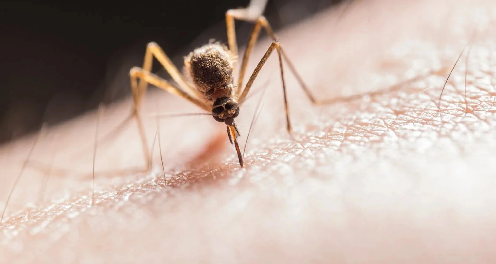

5 Plasmodium Sp., Parasit Penyebab Malaria
Malaria, dikenal sebagai salah satu penyakit yang disebabkan oleh parasit protozoa Plasmodium sp. Plasmodium sp. memerlukan dua inang dalam siklus hidupnya, yaitu manusia dan nyamuk khususnya dari genus Anopheles. Dalam genus Anopheles terdapat banyak spesies dan tidak semua spesies Anopheles dapat berperan sebagai vektor malaria. Terdapat kecenderungan vektor malaria berbeda setiap daerah. Dalam tubuh nyamuk, Plasmodium sp. akan mengalami fase seksual, sedangkan fase aseksual terjadi di dalam tubuh manusia. Pada saat nyamuk Anopheles sp. betina infektif menghisap darah manusia, sporozoit yang berada di kelenjar liur nyamuk akan masuk ke dalam peredaran darah manusia dan mengalami perkembangan di dalam sel hati. Masa inkubasi dihitung dari mulai masuknya sporozoit ke dalam darah manusia sampai timbulnya gejala klinis yang ditandai dengan demam.
Setiap jenis Plasmodium sp. memiliki masa inkubasi dan karakteristik yang berbeda – beda, yaitu:
1. Plasmodium falciparum
Plasmodium jenis ini memiliki masa inkubasi 8 – 2 hari, dengan rata – rata 12 hari. Jenis Plasmodium ini menyebabkan gejala demam timbul intermiten dan dapat kontinyu. Jenis malaria ini merupakan jenis Plasmodium yang paling sering menjadi malaria berat yang menyebabkan kematian. Malaria yang disebabkan oleh Plasmodium falciparum disebut malaria falciparum.
2. Plasmodium vivax
Plasmodium vivax diketahui sebagai penyebab malaria vivax. Masa inkubasinya berkisar antara 8 – 27 hari, dengan rata – rata 15 hari. Gejala demam yang ditimbulkan Plasmodium ini biasanya merupakan demam berulang dengan interval bebas demam 2 hari.
3. Plasmodium malariae
Plasmodium malariae menyebabkan malaria malariae. Gejala demam biasanya timbul berulang dengan interval bebas demam 3 hari. Waktu inkubasi malaria ini tergolong lama, yaitu 15 – 40 hari, dengan rata – rata 28 hari.
4. Plasmodium ovale
Plasmodium ovale yang menyebabkan malaria ovale. Manifestasi klinis malaria jenis ini biasanya bersifat ringan. Pola demam malaria ovale mirip dengan malaria vivax. Masa inkubasi berkisar 15 – 18 hari, dengan rata – rata 17 hari.
5. Plasmodium knowlesi
Plasmodium knowlesi menyebabkan malaria knowlesi. Gejala demam menyerupai malaria falciparum. Parasit ini banyak ditemui di Asia Tenggara. Masa inkubasi berkisar 9 – 12 hari, dengan rata – rata 11 hari.
Secara umum, malaria memiliki gejala klinis menggigil, demam tinggi, berkeringat, kelelahan, mual, muntah, diare, hingga nyeri otot. Salah satu upaya pencegahan penularan malaria adalah dengan pengendalian vektornya. Pengendalian vektor dapat dilakukan pada stadium dewasa maupun pradewasa. Jenis pengendalian vektor bersifat lokal spesifik, disesuaikan dengan perilaku vektor, lingkungan, dan perilaku manusia. Diharapkan dengan metode ini pengendalian vektor yang dilakukan akan lebih optimal.